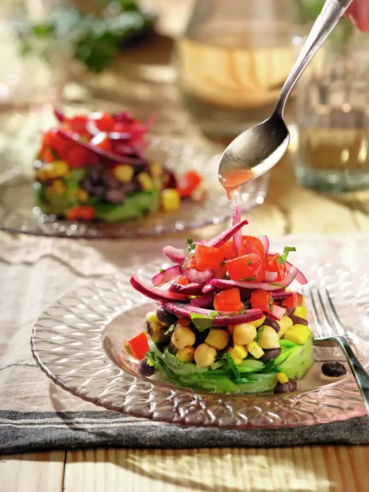
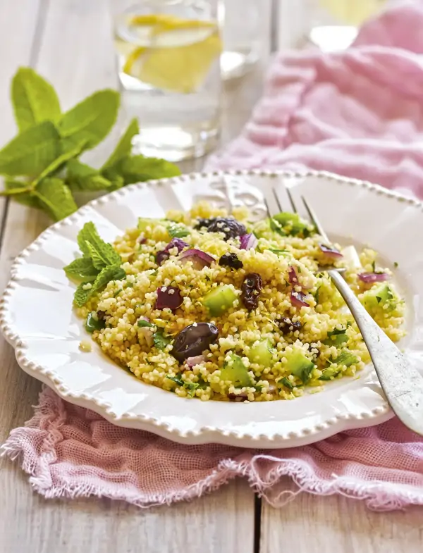
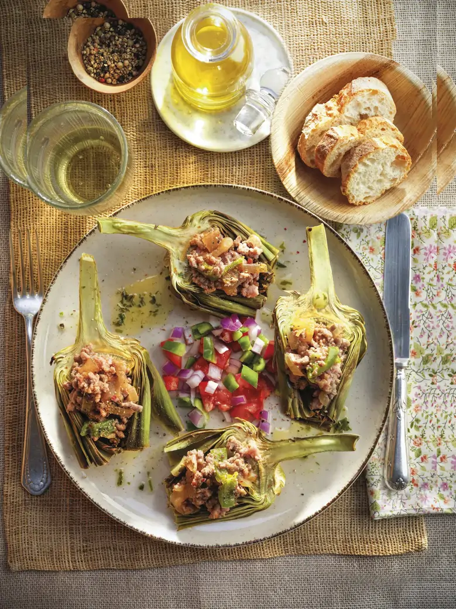

Recetas
¡Explora nuestras deliciosas recetas saludables!
Ensalada de garbanzos y frijoles

Tiempo
20 minutos.
Ingredientes (para 4 personas)
Elaboración
Cuscús al limón con calabacín y champiñones

Ingredientes (para 8 personas)
Elaboración
Alcachofas al horno con pico de gallo

Tiempo
1 hora.
Ingredientes (para 4 personas)
Elaboración